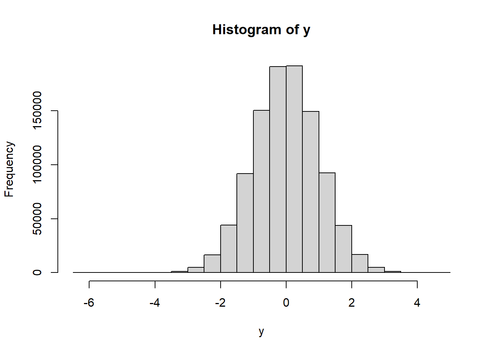
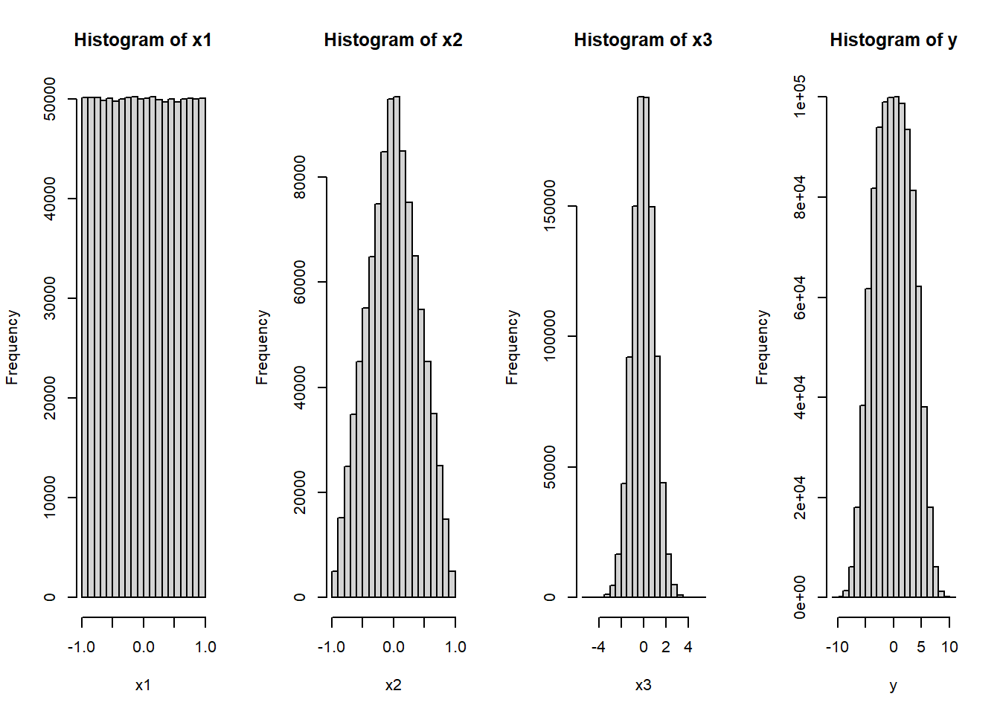
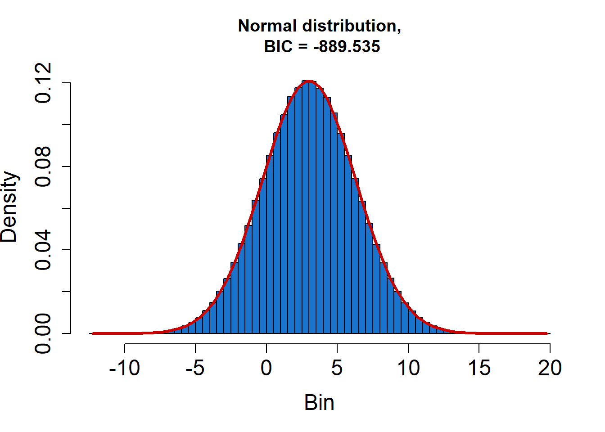
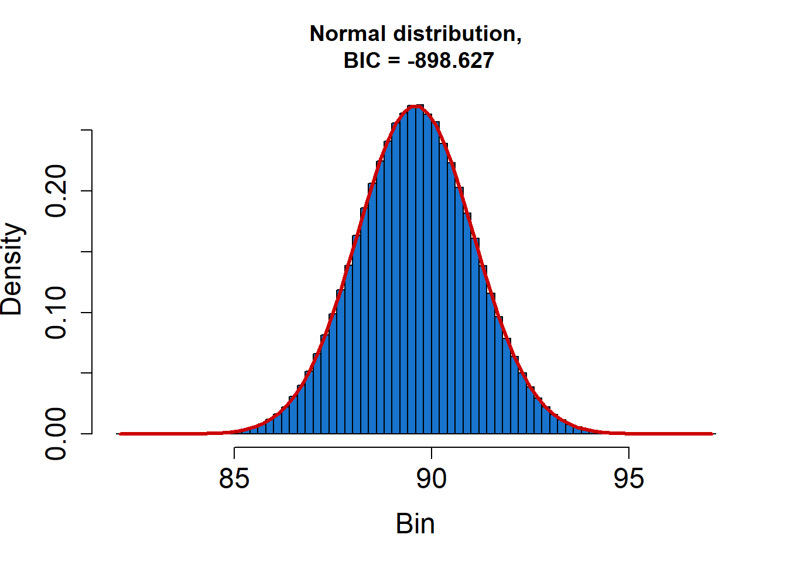
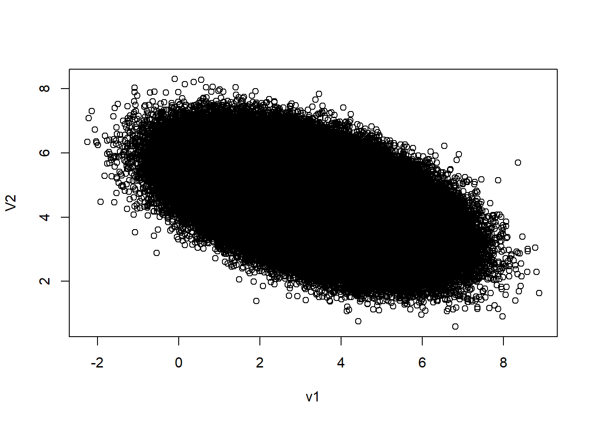

Metodo monte carlo
La GUM cuenta con diferentes complementos para su aplicación, uno de ellos es el —Suplemento 1 de la “Guía para la expresión de la incertidumbre de medida” — Propagación de distribuciones aplicando el método de Monte Carlo
Esta aproximación requiere un esfuerzo computacional considerable y puede acumular errores numéricos si el algoritmo computacional del generador de números aleatorios no se desarrolla cuidadosamente.
MCM es una alternativa a la GUM cuando
La estimación de la magnitud de salida (mensurando) y su incertidumbre asociada provista por la GUM podría no ser confiable
La pdf para la magnitud de salida del mensurando se aparta de una distribución normal,
El modelo es no lineal.
Para validar los resultados de la GUM
La función de medición es no lineal y los parámetros explicativos no son normales.
Aplicable a un modelo con cualquier número de magnitudes de entrada y una sola magnitud de salida.
Es difícil proporcionar las derivadas parciales del modelo, tal como requiere la ley de propagación de la incertidumbre
Los modelos son arbitrariamente complicados
Comparación de la estimación de incertidumbre bajo la GUM y MCM

Propagación de incertidumbres GUM
Propagación de distribuciones MCM
Simulación de las distribuciones de probabilidad
Para la simulación de las distribuciones de probabilidad y la implementación del método monte carlo, se requiere el uso de software, en el desarrollo de este curso se usará Rstudio, que facilitan la generación de numeros aleatorios para la estimación de la incertidumbre.
¿Cuántas simulaciones son necesarias?
Según GUM S1 (2008) Un valor de \(M = 10^6\) suele proporcionar un intervalo de cobertura del 95 % para la magnitud de salida, de forma que la amplitud del intervalo es correcta con una o dos cifras decimales significativas.
\[ \begin{cases} N>>\frac{1}{1-p}, & \\ N>10^4\frac{1}{1-p}, \end{cases} \]
\(N>219781\) donde p es el área de cobertura usualmente p=95.45%
Distribución rectangular ó uniforme
En una distribución rectangular cada valor en un intervalo dado tiene la misma probabilidad, o sea la función de densidad de probabilidad es constante en este intervalo.
Sea \(X∼U(a,b)\), es decir, una variable aleatoria con distribución uniforme en el intervalo (a,b), con \(a,b \quad \varepsilon \quad \mathbb{R}\):
| Descripción | b y a con b>a | a y -a [centrada en cero] |
|---|---|---|
| fdp f(x) | \(\frac{1}{b-a}\) | \(\frac{1}{2a}\) |
| F(x) | \(\frac{x-a}{b-a}\) | \(\frac{x-a}{2a}\) |
| prom E(X) | \(\frac{a+b}{2}\) | 0 |
| \(E(x^2)\) | \(\frac{b^2+ba+a^2}{3}\) | \(\frac{a^2}{3}\) |
| v(x) | \(\frac{(b-a)^2}{12}\) | \(\frac{a^2}{3}\) |
| sd=u(x) | \(\frac{(b-a)}{\sqrt{12}}\) | \(\frac{a}{\sqrt3}\) |
El rango de una distribución de probabilidad se refiere al conjunto de todos los posibles valores que puede tomar una variable aleatoria en esa distribución. Es la diferencia entre el valor máximo y el valor mínimo de esta variable.
Simulación de la distribución uniforme
## runif(n, min = 0, max = 1)
y=runif(n=1e6,min=-1,max=1)
hist(y)simulemos los resultados de una incertidumbre por resolución
\[u=\frac{a}{\sqrt 3}=\frac{1}{\sqrt 3}=0.577350 \] a es la semiamplitud=1, criterio necesario para definir la simulación
y=runif(n=1e6,min=0,max=2)
sd(y)## [1] 0.5775457hist(y)
Simulando la incertidumbre tipo A
como la desviación estándar proviene de una distribución uniforme hacemos uso de esta misma para la estimación de la incertidumbre.
\[u=\frac{s}{\sqrt {10}}=\frac{0.5773}{10}=0.182574\]
ysum=0
for(y in 1:10){
y=runif(n=1e6,min=-1,max=1)
ysum=ysum+y
}
y=(ysum)/10
sd(y)## [1] 0.1826149Distribución triangular
Generar una variable aleatoria continua con distribución triangular con parámetros a=-2 y b=2
u1<-runif(1e6,0,1)
u2<-runif(1e6,0,1)
m=0 # centro de la distribuciòn
a=2 # semiamplitud de la distribuciòn
x=m+(a*(u1+u2-1))
hist(x)
Distribución normal
#rnorm(n, mean = 0, sd = 1)
y=rnorm(1e6, mean = 0, sd = 1)
hist(y)
Distribución t de student
# rt(n, df, ncp)
ncp <- seq(0, 6, length.out = 31)
y=rt(1e6, df=8, ncp)
hist(y)
Simulación Distribución tipo A
sean los valores
#
val=c(40,39.999,39.998,40,39.999,39.999)
m=mean(val)
s=sd(val)/sqrt(6)
ncp <- seq(-10,10, length.out = 1e6)
##bajo una distribución t
y=rt(1e6, df=5, ncp=0)
sdd=rep(s,1e6)
ny=(y*sdd)+m
sd(ny)## [1] 0.0003973478##bajo una distribución normal
y=rnorm(1e6, mean = 0, sd = 1)
ny=(y*sdd)+m
sd(ny)## [1] 0.0003074026Propagación de incertidumbres GUM
Propagación de distribuciones MCM
Ejemplo
considere la siguiente ecuación que describe al mensurando
\[y=f(x_1,x_2,x_3)=5x_1-3x_2+x_3 \]
\[x_1= uniforme\quad u_{x_1}=\frac{1}{\sqrt 3}=0.5773\] \[x_2=triangular= \quad u_{x_2}=\frac{1}{\sqrt 6}=0.4082\]
\[x_3=normal\quad u_{x_3}=1\]
Por la GUM
\[u_C^2(y)=\sum_{i=1}^N c_i^2u^2(x_i)\]
\[u(y)=\sqrt{(5*u(x_1))^2+(3*u(x_2))^2+(u(x_3))^2}=3.29\]
Por MCM
#distri1
x1=runif(n=1e6,min=-1,max=1)
#distri2
u1<-runif(1e6,0,1)
u2<-runif(1e6,0,1)
m=0 # centro de la distribuciòn
a=1 # semiamplitud de la distribuciòn
x2=m+(a*(u1+u2-1))
#distr3
x3=rnorm(1e6, mean = 0, sd = 1)
y=(5*x1)-(3*x2)+(x3)
mean(y)## [1] -0.001620832par(mfrow=c(1,4))
sd(y)## [1] 3.28968hist(x1)
hist(x2)
hist(x3)
hist(y)
##Incertidumbre expandida
E=sort(y)
min(E)## [1] -10.80659min(E)## [1] -10.80659cuartil1 <- quantile(E, probs = c(0.02275,0.97725))
emin=cuartil1[1]
emax=as.numeric(cuartil1[2])
mediae=mean(E)
desv=sd(E)
U=emax-mediae
U## [1] 6.113679Librerías de R relacionadas con la incertidumbre
| Librería | Nombre | Descripción |
|---|---|---|
| boot | Funciones Bootstrap | Proporciona funciones para el remuestreo para estimar intervalos de confianza y otras medidas de incertidumbre para estadísticas y parámetros |
| uncertainty | Estimación de incertidumbre y análisis de contribución | Ofrece herramientas para la propagación de incertidumbre en cálculos y modelos. Permite realizar análisis de sensibilidad y estimar la incertidumbre en los resultados |
| car | Companion to Applied Regression | incluye funciones para calcular intervalos de confianza y realizar pruebas de hipótesis que pueden ser útiles para estimar la incertidumbre en modelos |
| propagate | propagación de incertidumbre | Ofrece herramientas para realizar análisis de sensibilidad y estimar la incertidumbre en los resultados. |
| gamlss | Generalized Additive Models for Location Scale and Shape | útil para el modelado de distribuciones de probabilidad complejas y puede ser utilizada para estimar la incertidumbre en modelos estadísticos más avanzados. |
Librería propagate para estimar incertidumbre
Algunos de los argumentos que pide la función propagate:
Matriz de covarianzas
Se utiliza cuando hay correlación entre variables
\[\begin{bmatrix} u_1^2(xi) & u(x_1)u(x_2)r(x_1,x_2)\\ u(x_2)u(x_1)r(x_2,x_1) & u_2^2(x_2)\\ \end{bmatrix}\]
Matriz de transformación R
Para incluir la correlación y desviación estándar de cada magnitud de entrada descomposiciòn de cholesky para a matriz de covarianza \[Cov(X)=R^TR\], esta matriz debe ser no definida positiva
Salidas de la función
Gradiente \[\nabla (f)=\left [\frac{\partial f}{\partial x_1 },...,\frac{\partial f}{\partial x_n} \right]\]
Hessiana \[\begin{bmatrix} \frac{\partial f}{\partial x_1^2} & \frac{\partial ^2f}{\partial x_1x_2} & \dots & \frac{\partial ^2f}{\partial x_1x_n}\\ \frac{\partial f}{\partial x_2 x_1} & \frac{\partial ^2f}{\partial x_2^2} & \dots & \frac{\partial ^2f}{\partial x_2x_n}\\ \vdots & \vdots & \dots & \vdots\\ \frac{\partial f}{\partial x_n x_1} & \frac{\partial ^2f}{\partial x_nx_2} & \dots & \frac{\partial ^2f}{\partial x_n^2}\\ \end{bmatrix}\]
Ejemplo
library(propagate)## Usando la función propagate
EXPR1 <- expression((5*x1)-(3*x2)+x3)
x1 <- c(1,0.5773)
x2 <- c(1,0.4082)
x3 <- c(1,1)
DF1 <- cbind(x1,x2,x3)
RES1 <- propagate(expr = EXPR1, data = DF1, type = "stat",
do.sim = TRUE, verbose = TRUE)
summary(RES1)## Results from error propagation:## Mean.1 Mean.2 sd.1 sd.2 2.5% 97.5%
## 3.000000 3.000000 3.291129 3.291129 -3.450498 9.450498## Results from Monte Carlo simulation:## Mean sd Median MAD 2.5% 97.5%
## 2.998714 3.290244 3.002004 3.295060 -3.453815 9.436626## Welch-Satterthwaite degrees of freedom:## [1] 1614466## Coverage factor (k):## [1] 1.959965## Expanded uncertainty:## [1] 6.450498## Symbolic gradient matrix:## [1] "5" "-3" "1"## Evaluated gradient matrix (sensitivity):## [1] 5 -3 1## Symbolic hessian matrix:## [1] "0" "0" "0"
## [1] "0" "0" "0"
## [1] "0" "0" "0"## Evaluated hessian matrix:## [1] 0 0 0
## [1] 0 0 0
## [1] 0 0 0## Covariance matrix:## x1 x2 x3
## x1 0.3332753 0.0000000 0
## x2 0.0000000 0.1666272 0
## x3 0.0000000 0.0000000 1## Relative contribution:## x1 x2 x3
## x1 0.7692251 0.0000000 0.00000000
## x2 0.0000000 0.1384519 0.00000000
## x3 0.0000000 0.0000000 0.09232308## Skewness / Excess Kurtosis of MC evaluations:## -0.001289778 / 0.005790922## Shapiro-Wilk test for normality:## 0.8626058 => normal## Kolmogorov-Smirnov test for normality:## 0.6208141 => normal¿Cuál distribución de probabilidad se ajusta mejor a los datos?
AIC \[AIC = -2 * log(L) + 2 * k\] BIC \[BIC = -2 * log(L) + k * log(n)\]
L representa la probabilidad maximizada del modelo, que mide qué tan bien se ajusta el modelo a los datos.
k representa el número de parámetros en el modelo
log(n) representa el logaritmo del tamaño de la muestra (n)
#busca cual distribución es la q mejor se ajusta
fitDistr(RES1)## 1 of 32: Fitting Normal distribution...## .........## 2 of 32: Fitting Skewed-normal distribution...## .........10.........20.......## 3 of 32: Fitting Generalized normal distribution...## .........10.........20.......## 4 of 32: Fitting Log-normal distribution...## .........## 5 of 32: Fitting Scaled/shifted t- distribution...## .........10.........20.......## 6 of 32: Fitting Logistic distribution...## .........## 7 of 32: Fitting Uniform distribution...## .........## 8 of 32: Fitting Triangular distribution...## .........10.........20.......## 9 of 32: Fitting Trapezoidal distribution...## .........10.........20.........30.........40.........50
## .........60.........70.........80.## 10 of 32: Fitting Curvilinear Trapezoidal distribution...## .........10.........20.......## 11 of 32: Fitting Gamma distribution...## .........## 12 of 32: Fitting Inverse Gamma distribution...## .........## 13 of 32: Fitting Cauchy distribution...## .........## 14 of 32: Fitting Laplace distribution...## .........## 15 of 32: Fitting Gumbel distribution...## .........## 16 of 32: Fitting Johnson SU distribution...## .........10.........20.........30.........40.........50
## .........60.........70.........80.## 17 of 32: Fitting Johnson SB distribution...## .........10.........20.........30.........40.........50
## .........60.........70.........80.## 18 of 32: Fitting 3P Weibull distribution...## .........10.........20.......## 19 of 32: Fitting 2P Beta distribution...## .........## 20 of 32: Fitting 4P Beta distribution...## .........10.........20.........30.........40.........50
## .........60.........70.........80.## 21 of 32: Fitting Arcsine distribution...## .........## 22 of 32: Fitting von Mises distribution...## .........## 23 of 32: Fitting Inverse Gaussian distribution...## .........## 24 of 32: Fitting Generalized Extreme Value distribution...## .........10.........20.......## 25 of 32: Fitting Rayleigh distribution...## .........## 26 of 32: Fitting Chi-Square distribution...## ...## 27 of 32: Fitting Exponential distribution...## ...## 28 of 32: Fitting F- distribution...## .........## 29 of 32: Fitting Burr distribution...## ...## 30 of 32: Fitting Chi distribution...## ...## 31 of 32: Fitting Inverse Chi-Square distribution...## ...## 32 of 32: Fitting Cosine distribution...## .........
## Best fit is Normal Distribution.## Parameters:## mean sd
## 3.001616 3.294783## Standard errors:## mean sd
## 0.002677529 0.002186193## Goodness of fit:## BIC = -917.3917El ejercicio del parcial hecho en R
library(propagate)
## => Normal distribution.
EXPR1 <- expression((1-(x/y))*100)
x <- c(165.52,23.45)
y <- c(1589.64,0.51)
DF1 <- cbind(x, y)
RES1 <- propagate(expr = EXPR1, data = DF1, type = "stat",do.sim = TRUE, verbose = TRUE)
summary(RES1)## Results from error propagation:## Mean.1 Mean.2 sd.1 sd.2 2.5% 97.5%
## 89.587580 89.587579 1.475181 1.475181 86.696274 92.478883## Results from Monte Carlo simulation:## Mean sd Median MAD 2.5% 97.5%
## 89.591168 1.474162 89.590316 1.473022 86.698216 92.484124## Welch-Satterthwaite degrees of freedom:## [1] 1000010## Coverage factor (k):## [1] 1.959966## Expanded uncertainty:## [1] 2.891304## Symbolic gradient matrix:## [1] "-(1/y * 100)" "x/y^2 * 100"## Evaluated gradient matrix (sensitivity):## [1] -0.062907325 0.006550175## Symbolic hessian matrix:## [1] "0" "1/y^2 * 100"
## [1] "1/y^2 * 100" "-(x * (2 * y)/(y^2)^2 * 100)"## Evaluated hessian matrix:## [1] 0.000000e+00 3.957332e-05
## [1] 3.957332e-05 -8.241080e-06## Covariance matrix:## x y
## x 549.9025 0.0000
## y 0.0000 0.2601## Relative contribution:## x y
## x 0.9999949 0.000000e+00
## y 0.0000000 5.128092e-06## Skewness / Excess Kurtosis of MC evaluations:## -0.0005327581 / 0.009510585## Shapiro-Wilk test for normality:## 0.6088106 => normal## Kolmogorov-Smirnov test for normality:## 0.7415242 => normalfitDistr(RES1)## 1 of 32: Fitting Normal distribution...## .........## 2 of 32: Fitting Skewed-normal distribution...## .........10.........20.......## 3 of 32: Fitting Generalized normal distribution...## .........10.........20.......## 4 of 32: Fitting Log-normal distribution...## .........## 5 of 32: Fitting Scaled/shifted t- distribution...## .........10.........20.......## 6 of 32: Fitting Logistic distribution...## .........## 7 of 32: Fitting Uniform distribution...## .........## 8 of 32: Fitting Triangular distribution...## .........10.........20.......## 9 of 32: Fitting Trapezoidal distribution...## .........10.........20.........30.........40.........50
## .........60.........70.........80.## 10 of 32: Fitting Curvilinear Trapezoidal distribution...## .........10.........20.......## 11 of 32: Fitting Gamma distribution...## .........## 12 of 32: Fitting Inverse Gamma distribution...## .........## 13 of 32: Fitting Cauchy distribution...## .........## 14 of 32: Fitting Laplace distribution...## .........## 15 of 32: Fitting Gumbel distribution...## .........## 16 of 32: Fitting Johnson SU distribution...## .........10.........20.........30.........40.........50
## .........60.........70.........80.## 17 of 32: Fitting Johnson SB distribution...## .........10.........20.........30.........40.........50
## .........60.........70.........80.## 18 of 32: Fitting 3P Weibull distribution...## .........10.........20.......## 19 of 32: Fitting 2P Beta distribution...## .........## 20 of 32: Fitting 4P Beta distribution...## .........10.........20.........30.........40.........50
## .........60.........70.........80.## 21 of 32: Fitting Arcsine distribution...## .........## 22 of 32: Fitting von Mises distribution...## .........## 23 of 32: Fitting Inverse Gaussian distribution...## .........## 24 of 32: Fitting Generalized Extreme Value distribution...## .........10.........20.......## 25 of 32: Fitting Rayleigh distribution...## .........## 26 of 32: Fitting Chi-Square distribution...## ...## 27 of 32: Fitting Exponential distribution...## ...## 28 of 32: Fitting F- distribution...## .........## 29 of 32: Fitting Burr distribution...## ...## 30 of 32: Fitting Chi distribution...## ...## 31 of 32: Fitting Inverse Chi-Square distribution...## ...## 32 of 32: Fitting Cosine distribution...## .........
## Best fit is Normal Distribution.## Parameters:## mean sd
## 89.591041 1.473537## Standard errors:## mean sd
## 0.001226648 0.001001554## Goodness of fit:## BIC = -883.1302Otro ejemplo
Calibración de un multímetro DMM
Punto de medición: 40V
Especificaciones del calibrador: \(\pm\) (18 ppm set+150\(\mu\) V)
| Lecturas DMM | 40.000 | 39.999 | 39.998 | 40.000 | 39.999 | 39.999 |
|---|---|---|---|---|---|---|
| Promedio | 39.999 | sd | 0.00075277 | n | 6 |
Resultados calibración del patrón (tensión continua)
| Intervalo V | 329.9999 |
|---|---|
| Valor indicado V | 40.0000 |
| Valor patrón V | 40.0020 |
| Error V | -0.0020 |
| Factor de cobertura k(95.45%) | 2 |
| Incertidumbre expandida V | 0.0002 |
| Incertidumbre típica | 0.0001 |
Se desea estimar la incertidumbre del error dada por:
\[Error= V_{medido} - V_{Patrón} \] \[E:(V_x+\delta V_{xres})-(V_{certif}+\delta V_{Esp})\]
Método GUM
| Componente | Valor | Tipo | Estima Incer | Valor incer | Distribución |
|---|---|---|---|---|---|
| \(V_x\) | Medido | A | \(u_A=\frac{0.000075277}{\sqrt 6}\) | 0.00030732 V | t student (gl=5) |
| \(\delta V_{res}\) | Resolución | B | \(u_{res}=\frac{0.001}{\sqrt {12}}\) | 0.00028868 V | Uniforme |
| \(V_s\) | Patrón | B | \(u_{pat}=\frac{0.0002}{2}\) | 0.0001 V | Normal |
| \(V_{esp}\) | Especificaciones | B | \(u_{esp}=\frac{0.00087}{\sqrt{3}}\) | 0.0005023 V | Uniforme |
\[u_c=\sqrt{0.00030732^2+0.00028868^2+0.0001^2+0.0005023^2}=0.0006634=6.6*10^{-4}\] ¿cumple con el criterio de la Incertidumbre dominante?
\[\frac{\sqrt{0.00030732^2+0.00028868^2+0.0001^2}}{0.0005023}= 0.86>0.3\] !!!no cumple!!!
\[v_{ef}=\frac{0.0006634^4}{\frac{0.00030732^4}{5}}=108\]
con un nc=0.9545 =95.45%
1-0.9545=0.455/2=0.02275
\(k=t(\alpha= 0.02275,gl=108)=2.023\)
U=2.023*0.0006634=0.001342
library(propagate)
qt(p=0.02275, df=108, lower.tail = FALSE, log.p = FALSE)## [1] 2.023416WelchSatter(ui=c(0.00030732,0.00028868,0.0001,0.0005023),
df = c(5,50000,50000,50000), alpha = 0.025)## $ws.df
## [1] 108.4775
##
## $k
## [1] 2.273081
##
## $u.exp
## [1] 0.001507941Método Monte carlo
##Incer tipo A
##bajo una distribución t
y=rt(1e6, df=5)
m=39.999
s=0.00075277/sqrt(6)
sdd=rep(s,1e6)
ir=(y*sdd)+m
sd(ir)## [1] 0.0003968311## vs valor gum 0.0030732 bajo una t
##______________________________________________________________
##Incer resln
## rsln=0.001 semi amplitud=0.0005
## runif(n, min = 0, max = 1)
irsln=runif(n=1e6,min=-0.0005,max=0.0005)
sd(irsln)## [1] 0.0002886013## vs 0.0002886
##__________________________
## incer patrón
##bajo una distribución normal
m=40.0020
s=0.0001
y=rnorm(1e6, mean = 0, sd = 1)
sdd=rep(s,1e6)
ipat=(y*sdd)+m
sd(ipat)## [1] 9.998779e-05##______________________________________________________________
##Incer especif
## rsln=0.001 semi amplitud=0.0005
## runif(n, min = 0, max = 1)
iesp=runif(n=1e6, min=-0.00087, max=0.00087)
sd(iesp)## [1] 0.0005021083##__forma resultante___________________
e=(ir+irsln)-(ipat+iesp)
# incertidumbre combinada_____
sd(e)## [1] 0.0007089414hist(e)##Incertidumbre expandida
cuartil1 <- quantile(e, probs = c(0.02275,0.97725))
emin=cuartil1[1]
emax=as.numeric(cuartil1[2])
mediae=mean(e)
U=emax-mediae
U## [1] 0.001373827Librería propagate
library(propagate)
exp=expression(Vm+Vres-Vcer+VEsp)
Vm=c(1,0.00030732)
Vres=c(1,0.00028868)
Vcer=c(1,0.0001)
VEsp=c(1,0.0005023)
DF2 <- cbind(Vm,Vres,Vcer,VEsp)
RES2 <- propagate(expr =exp, data = DF2, type = "stat",do.sim = TRUE,
verbose = TRUE,alpha = 0.025,nsim = 100000)
summary(RES2)## Results from error propagation:## Mean.1 Mean.2 sd.1 sd.2 1.25% 98.75%
## 2.0000000000 2.0000000000 0.0006633905 0.0006633905 1.9985130737 2.0014869263## Results from Monte Carlo simulation:## Mean sd Median MAD 1.25% 98.75%
## 2.0000022143 0.0006614306 2.0000029456 0.0006634171 1.9985150304 2.0014789064## Welch-Satterthwaite degrees of freedom:## [1] 2432424## Coverage factor (k):## [1] 2.241404## Expanded uncertainty:## [1] 0.001486926## Symbolic gradient matrix:## [1] "1" "1" "-1" "1"## Evaluated gradient matrix (sensitivity):## [1] 1 1 -1 1## Symbolic hessian matrix:## [1] "0" "0" "0" "0"
## [1] "0" "0" "0" "0"
## [1] "0" "0" "0" "0"
## [1] "0" "0" "0" "0"## Evaluated hessian matrix:## [1] 0 0 0 0
## [1] 0 0 0 0
## [1] 0 0 0 0
## [1] 0 0 0 0## Covariance matrix:## Vm Vres Vcer VEsp
## Vm 9.444558e-08 0.000000e+00 0e+00 0.000000e+00
## Vres 0.000000e+00 8.333614e-08 0e+00 0.000000e+00
## Vcer 0.000000e+00 0.000000e+00 1e-08 0.000000e+00
## VEsp 0.000000e+00 0.000000e+00 0e+00 2.523053e-07## Relative contribution:## Vm Vres Vcer VEsp
## Vm 0.2146066 0.0000000 0.00000000 0.0000000
## Vres 0.0000000 0.1893629 0.00000000 0.0000000
## Vcer 0.0000000 0.0000000 0.02272278 0.0000000
## VEsp 0.0000000 0.0000000 0.00000000 0.5733077## Skewness / Excess Kurtosis of MC evaluations:## -0.004863228 / -0.01138145## Shapiro-Wilk test for normality:## 0.3345701 => normal## Kolmogorov-Smirnov test for normality:## 0.935581 => normalComparación
| factor | u GUM | u MCM |
|---|---|---|
| u | 0.0006634 | 0.00071 |
| k | 2.023 | — |
| U | 0.001342 | 0.00137 |
Otro ejemplo teniendo en cuenta la correlación entre variables
\[y=f(x_1,x_2,x_3)=5x_1-3x_2+x_3\]
\[r(x_1,x_2)=-0.5\]
| variable | Distribución | promedio | \(u(x_i)\) | \(c_i\) |
|---|---|---|---|---|
| \(x_1\) | Normal | 1.5 | 1.2 | 5 |
| \(x_2\) | Normal | 3 | 0.8 | 3 |
| \(x_3\) | Uniforme | \(\bar x=0\) a=1 | \(u=1/\sqrt 3=0.5773\) | 1 |
Por el método GUM
\[u_c(y)=\sqrt{(c_1u_{x_1})^2+(c_2u_{x_2})^2+(c_3u_{x_3})^2+2c_1c_2 u_{x_1} u_{x_2} r(x_1,x_2))}\] \[u_c(y)=\sqrt{(5*1.2)^2+(3*0.8)^2+(1*0.5773)^2+(2*1.2*0.8*-0.5)}=7.51\]
sin correlación=6.48
Simulación de \(x_1\)
m=1.5
s=1
y=rnorm(1e6, mean = 0, sd = 1)
sdd=rep(s,1e6)
mm=rep(m,1e6)
ipat=(y*sdd)+mm
sd(ipat)## [1] 1.000647#Simulación de x2
m=3
s=1
y1=rnorm(1e6, mean = 0, sd = 1)
sdd=rep(s,1e6)
mm1=rep(m,1e6)
ipat1=(y1*sdd)+mm1
sd(ipat)## [1] 1.000647encontrar matriz de var-cov
\[cov=\begin{bmatrix} u_1^2(xi) & u(x_1)u(x_2)r(x_1,x_2)\\ u(x_2)u(x_1)r(x_2,x_1) & u_2^2(x_2)\\ \end{bmatrix}\]
\[cov=\begin{bmatrix} 1.2^2 & 1.2*0.8*-0.5\\ 1.2*0.8*-0.5 & 0.8^2\\ \end{bmatrix}\]
\[cov=\begin{bmatrix} 1.44 & -0.48\\ -0.48 & 0.64\\ \end{bmatrix}\]
\[x=\bar x+x_s*R\]
\[x_{i_{corr}}= \begin{bmatrix} \bar x_1 & \bar x_2 \\ \bar x_1 & \bar x_2\\ \bar x_1 & \bar x_2\\ \bar x_1 & \bar x_2\\ \bar x_1 & \bar x_2\\ \vdots & \vdots \\ \bar x_1 & \bar x_2 \end{bmatrix} +\begin{bmatrix} x_{1s} & x_{2s} \\ x_{1s} & x_{2s}\\ x_{1s} & x_{2s}\\ x_{1s} & x_{2s}\\ x_{1s} & x_{2s}\\ \vdots & \vdots \\ x_{1s} & x_{2s} \end{bmatrix}* \begin{bmatrix} 1.44 & -0.48\\ -0.48 & 0.64\\ \end{bmatrix}\]
sy2 <- new("dsyMatrix", Dim = as.integer(c(2,2)), x = c(1.44,-0.48,-0.48,0.64))
(c2 <- chol(sy2))#-> "Cholesky" matrix## 2 x 2 Matrix of class "Cholesky"
## [,1] [,2]
## [1,] 1.2000000 -0.4000000
## [2,] . 0.6928203str(c2)## Formal class 'Cholesky' [package "Matrix"] with 5 slots
## ..@ x : num [1:4] 1.2 0 -0.4 0.693
## ..@ Dim : int [1:2] 2 2
## ..@ Dimnames:List of 2
## .. ..$ : NULL
## .. ..$ : NULL
## ..@ uplo : chr "U"
## ..@ diag : chr "N"c2=as.matrix(c2)
cc=as.matrix(cbind(ipat,ipat1))
res=cc%*%c2
med=as.matrix(cbind(mm,mm1))
valres=med+res
v1=valres[,1]
V2=valres[,2]
plot(v1,V2)
cor(v1,V2)## [1] -0.502291## rsln=1 semi amplitud=0.0005
## runif(n, min = 0, max = 1)
V3=runif(n=1e6,min=-0.5,max=0.5)
y=(5*v1)-(3*V2)+V3
sd(y)## [1] 7.509308##Incertidumbre expandida
cuartil1 <- quantile(y, probs = c(0.02275,0.97725))
ymin=cuartil1[1]
ymax=as.numeric(cuartil1[2])
mediae=mean(y)
sd(y)## [1] 7.509308U=ymax-mediae
U## [1] 14.97426Bibliografía
GUM S1. (2008). JCGM 101:2008 Evaluación de datos de medición-Suplemento 1 de la “Guía para la expresión de la incertidumbre de medida”-Propagación de distribuciones aplicando el método de Monte Carlo. www.cem.es,